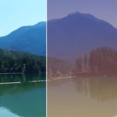

Verloopbedekking

Legt een tweekleurig verloop over de laag, met keuze uit vormen en overvloeimodi.
Instellingen
| Instelling | Type | Bereik | Standaard |
|---|---|---|---|
| Kleur 1 | Kleur | – | #3A1C71 |
| Kleur 2 | Kleur | – | #FFAF7B |
| Vorm | Keuze | Lineair, Radiaal, Gespiegeld, Hoek | Lineair |
| Hoek | Hoek | -360° tot 360° | 90° |
| Schaal | Getal | 0.05 tot 10 | 1 |
| Dekking | Getal | 0 tot 1 | 0.6 |
| Mengen | Keuze | Normaal, Vermenigvuldigen, Bleken, Bedekken, Zacht licht, Fel licht, Optellen, Donkerder, Lichter, Verschil, Kleur tegenhouden, Kleur doordrukken | Normaal |
| Verschuiving | Punt (X, Y) | -4000 px tot 4000 px | 0 px, 0 px |
| Lengte | Keuze | Rechthoek, Ovaal | Rechthoek |
| Stijl | Keuze | Klassiek, Standaard | Klassiek |